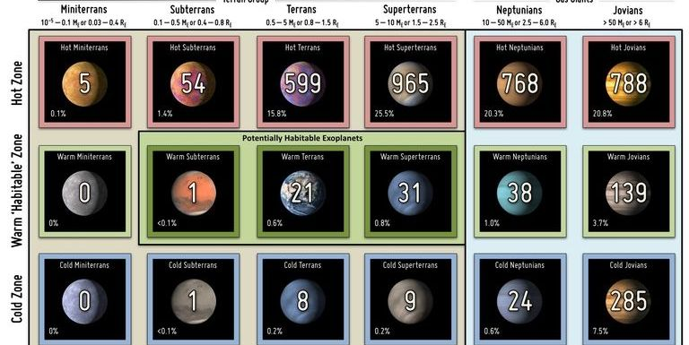
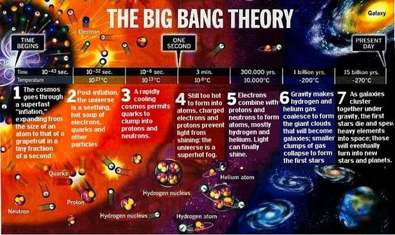

Black Holes
Overview
Black holes are collapsed stars with infinite gravity (yes, infinite!). They cannot be seen via light, so
we detect them by looking for an absence of light. They are found at the centers of most galaxies as
well.
Why so black?
As you should know, an object is visible to us via reflection of light. However, with a black hole, light
does not come back to us from the black hole as within the event horizon of a black hole space is curved
to the point where all paths that light might take to exit the event horizon point back inside the event
horizon. This is the reason why light cannot escape a black hole. Another way to look at it is that the
escape velocity from the event horizon of a black hole is faster than the speed of light. Since nothing
can travel faster than the speed of light, nothing escapes the event horizon of a black hole.
Death of Black Holes
During the late 20th century, Stephen Hawking discovered that there was a way for particles to
escape a black hole. However, the chances of it occuring were unlikely. This meant it would take very
long for this radiation to have much effect on the black hole. Since Hawking discovered it, the
radiation was named Hawking Radiation. Even if the black hole wasn't consuming any mass, the radiation's
effect would be little, meaning the black holes would take trillions of years to radiate away. This
means that black holes might be the last sources of energy in a dying universe.
Exoplanets
Overview
Exoplanets are planets orbiting other stars. They can be gas giants, rocky planets or ice giants just
like our system's planets. Scientists think that almost all stars have exoplanets orbiting them.
Categories of Exoplanets
Exoplanets have 18 different categories. Some examples of their names are Cold Minuterrans, Warm
Neptunians, Hot Terrans, Cold Superterrans and Warm Terrans. Out of all 18 categories, only 3 are
potentially habitable. These categories are Warm Subterrans, Warm Terrans and Warm Superterrans. The
chart form is given below.

Nearby Exoplanets
Our solar system is in a mainstream galaxy (The Milky Way), so we should have some exoplanets near us,
right? Right. The 5 nearest exoplanets are Proxima Centauri B and C, Barnard's Star B and Wolf 359 B and
C.
The Big Bang (Theory)
Overview
The Big Bang theory is the prevailing cosmological model explaining the existence of the observable
universe from the earliest known periods through its subsequent large-scale evolution. The model
describes how the universe expanded from an initial state of high density and temperature, and offers a
comprehensive explanation for a broad range of observed phenomena, including the abundance of light
elements, the cosmic microwave background (CMB) radiation, and large-scale structure.
Timeline of Expansion

The timeline of the Big Bang can be divided into 8 parts:
- 10-43 seconds: The cosmos undergoes an "inflation", rapidly expanding from atomic size to that of a grapefruit.
- 10-32 seconds: Post-inflation, the universe is a seething hot soup of quarks and electrons
- 10-6 seconds: Quarks start clumping into protons and neutrons.
- 3 minutes: Light doesn't shine properly due to charged electrons and protons; the universe is a superheated fog.

- 3 × 105 years: Electrons combine with protons to form atoms, allowing light to shine, creating the CMB (Cosmic Microwave Background).
- 106 years: Matter dissolves in dark matter, creating the Dark Ages.
- 4 × 108 years: The 1st stars and galaxies begin to form.
- 1.5 × 109 years: The first metals form.